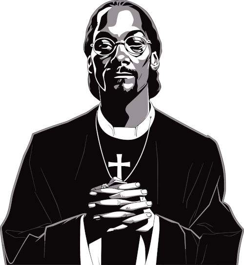

Snoop Dogg (nome real: Calvin Cordozar Broadus Jr.) é um rapper, cantor e ator americano, nascido em 1971. Ficou famoso nos anos 1990 ao ser descoberto por Dr. Dre e lançar o álbum de estreia Doggystyle (1993), um marco do rap da Costa Oeste. Conhecido por seu estilo relaxado, voz marcante e envolvimento com a cultura da maconha, também atuou em filmes e programas de TV. É uma das figuras mais influentes e carismáticas da história do hip-hop.
Ele era um membro da 20 Crips Rollin ' gangue da Costa Oeste de Long Beach.
Postado por: Arthur Alexandre da silva- © 2025